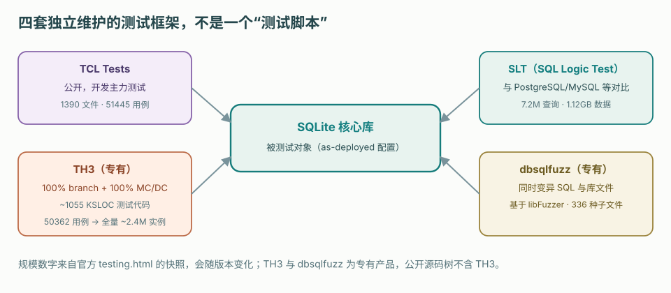
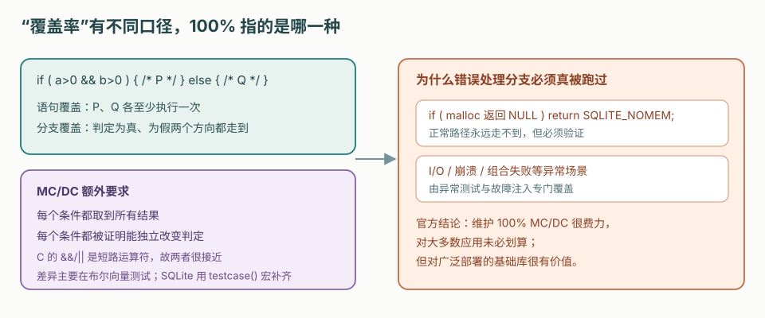

测试框架：四套 harness、覆盖率口径与异常测试
“测试最严苛”到底指什么？把宣传语换成可查证的规模、覆盖率口径与异常测试方法，并分清哪些数字会随版本变化。
1. “测试最严苛”具体指什么？
“SQLite 测试代码是产品代码的十倍”“100% 分支覆盖”——这类说法流传很广，但真正的依据应该落到官方 Testing 文档 上。官方给出的不是一句口号，而是一组可核对的机制：四套相互独立维护的测试框架、以 as-deployed 配置度量的 100% branch 覆盖、以及一整套异常测试。
一个容易被忽略的细节是：测试规模、用例数量和覆盖率快照会随版本变化。把某个版本的 “xx 万用例” 当成永久不变量，就会像旧版页面那样写出无法核对的数字。
2. 四套相互独立的测试框架
官方明确：核心库由四套各自独立设计、维护、管理的测试框架覆盖。它们各盯一类风险，而不是同一件事做四遍。

| 框架 | 定位 | 可查证的规模（文档快照） |
|---|---|---|
| TCL Tests | 公开、开发主力 | 约 27.2 KSLOC C 接口；1390 个脚本文件；51445 个用例 |
| TH3 | 专有，面向嵌入式平台 | 约 1055.4 KSLOC；50362 个用例；全量跑约 2.4M 实例 |
| SLT | 与 PostgreSQL/MySQL/SQL Server/Oracle 对比 | 7.2M 查询；1.12GB 测试数据 |
| dbsqlfuzz | 专有模糊测试器 | 基于 libFuzzer；336 个种子文件；约 10 亿次变异/天 |
特别要纠正一点：TH3 是专有产品，不在公开源码树里。旧文声称它的源码放在 test/th3/ 供公众查看，这是错的；公开仓库里能找到的是 TCL 测试与其他辅助程序。
3. 100% branch 与 MC/DC 的口径
官方说的 “100% 覆盖” 有两种口径：语句覆盖（每行至少执行一次）与分支覆盖（每个分支方向都走到）。SQLite 声称在 as-deployed 配置下达到 100% 分支覆盖，并通过 TH3 达到 100% MC/DC。

&&、|| 是短路运算符，因此分支覆盖与 MC/DC 非常接近，差异主要在布尔向量测试上。MC/DC（修正条件/判定覆盖）额外要求：每个条件都取到所有结果，且每个条件都被证明能独立影响判定结果。为补齐布尔向量场景，SQLite 用 testcase() 宏标记位测试。
官方的态度很克制：维护 100% MC/DC 很费力，对大多数应用未必划算；只是对像 SQLite 这样被海量部署的基础库才值得。这也解释了一个常见误解——100% 覆盖率的价值不在 “数字好看”，而在让异常处理分支被真正执行。
4. 异常测试：OOM、I/O 与崩溃
正常路径好测，难的是外部资源失败。官方把这类测试归为 anomaly testing，主要有四类：
| 类别 | 模拟什么 |
|---|---|
| Out-of-Memory | 定制分配器让第 N 次分配返回 NULL，检查每条错误分支 |
| I/O 错误 | 定制 VFS 模拟读/写失败、磁盘满等 |
| 崩溃 / 掉电 | 在写事务的不同阶段中断，验证恢复后的一致性 |
| 组合失败 | 同时注入多种故障（如 OOM + I/O 错误） |
配套的还有动态分析：大量 assert() 与运行时检查、Valgrind 内存分析、未定义行为检查，以及专门的禁用优化测试（把编译器优化关掉重跑，暴露被优化掩盖的问题）。官方还维护一份 release 前必须勾选的 checklist。
此外还有一批专用程序：speedtest1.c（典型负载性能）、mptester.c（多进程读写压力）、threadtest3.c（多线程压力）、fuzzershell.c 与 jfuzz。它们不是“主测试”，但同样在发布前必须跑过。
5. 模糊测试：OSS-Fuzz 与 dbsqlfuzz
Google OSS-Fuzz 自 2016 年起对 SQLite 做持续自动模糊测试；SQLite 在仓库里的接口是 test/ossfuzz.c。官方现在的描述是：OSS-Fuzz 已不再发现历史性 bug，但偶尔仍能在新的开发变更中找到问题。
除 OSS-Fuzz 外，SQLite 还自研了专有的 dbsqlfuzz：它不像只变异 SQL 或只变异库文件的测试器，而是同时变异 SQL 与数据库文件，因此能进入新的错误状态。它与 OSS-Fuzz 是不同的对象，不可混为一谈。
# 官方发布门槛（概念性概括，细节以 testing.html 为准）
# 所有测试必须在多平台、多编译配置下通过，才会发布
# 公开仓库中的部分是 TCL 测试与辅助程序；TH3/dbsqlfuzz 为专有6. 可运行实验
本节实验无法复制 TH3 或专有 fuzzer，但可以现场体会两个可查证的要点：错误分支必须被真正执行，以及逻辑测试逐条对比预期结果。examples/24_anomaly.py 先故意触发一个 NOT NULL 约束错误（迫使命中错误分支），再用一组固定 SQL 逐条比较结果。
python3 examples/24_anomaly.py
# PASS: error branch exercised (NOT NULL) and 3 logic cases matched; sqlite3 3.54.0这个脚本不是“测试框架”，它只是演示原则：只跑正常路径的测试无法证明异常分支是对的。真正的 100% 覆盖靠的是定制分配器、定制 VFS 与参数化用例——那是 TH3 与官方测试集群的职责。
可重复练习
- 用
PRAGMA integrity_check与PRAGMA quick_check对比一个正常库的输出与耗时； - 写一个只覆盖成功路径的脚本，再补上错误分支，解释为什么前者“看起来通过”却不完整；
- 阅读官方 testing.html 中 “Branch coverage versus MC/DC” 一节，用自己的话区分两个口径。
自测：为什么“测试代码行数”不能简单当成质量指标？
行数只反映规模，不反映覆盖了什么风险。更有意义的是覆盖口径（branch/MC/DC）、异常场景是否被注入测试，以及每个 bug 是否有回归用例。官方给出的也是这些机制，而不是一个行数倍数。
原始资料与版本边界
本章的框架构成、规模数字与覆盖率口径均来自 SQLite 官方 Testing 文档快照；这些数字会随版本更新，应以当时官方页面为准。TH3、dbsqlfuzz 为专有产品，公开源码不含其实现。
- How SQLite Is Tested · SQLite 官方
- TH3: The SQLite Test Harness · SQLite 官方
- Google OSS-Fuzz · Google 开源